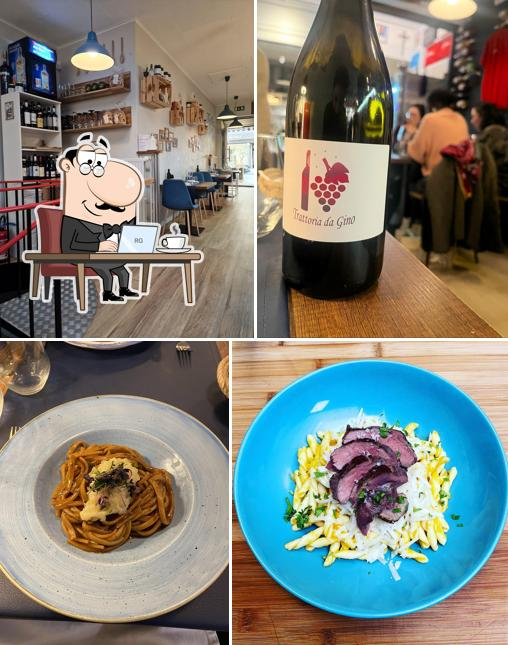

Le vrai da Gino
Une trattoria comme en Italie, au cœur de la Gare
La cuisine est ouverte au fond de la salle.
Ici, pas de grande carte figée : un tableau court qui change au fil du marché et de l'inspiration du jour. Les pâtes sont fraîches, roulées maison dans la tradition italienne — comme les strascinate intégrales, tomate, basilic, pecorino et pistache.
Ambiance chaleureuse et sans chichis, une terrasse pour les beaux jours, et une option de pâtes sans gluten disponible à tout moment. On vient pour manger vrai, pas pour la mise en scène.
Cuisine ouverte
Pâtes fraîches
Sans gluten dispo
Terrasse
Chiens bienvenus
